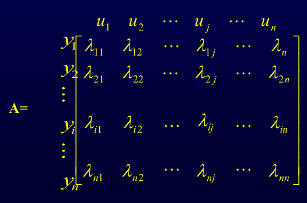

1.7系统关联及其消除方法
1.7.1系统关联及其影响
所谓关联，就是系统之间彼此相互有影响
1.7.2分析系统关联的方法
相对增益定义
其它回路闭合与否对本通道没有影响，即， 该通道的控制回路与其它回路没有关联
其它回路闭合对本通道有影响，即， 该通道的控制回路与其它系统有关联，这种关联使得本回路增益变小， 负关联。（越大关联越大）
其它回路闭合对本通道有影响，即， 该通道的控制回路与其它系统有关联，这种关联使得本回路增益变大， 正关联。（越小关联越大）
其它回路开环时，ui对yi没有影响，j – i 通道的控制回路 不能构成
符号相反，其它回路闭合时，本回路将变成不稳定 （条件稳定回路）
只有在其它回路开环时，才能用ui控制yi，即此通道 的控制回路才能成立
相对增益矩阵A – 布里斯托尔阵列

每行（列）相对增益之和为1
已知各通道的开环增益
例:设过程输入输出关系如下，试选择控制回路 解： 计算相对增益
1.7.3削弱或消除系统间关联的方法
- 按照变量配对，若λ均在1的附近，说明关联不大，此时，可 采用控制系统参数整定的方法，即拉开工作频率范围，可以削弱关 联的影响
- 若相对增益都离1较远，说明彼此关联较厉害，必须从控制系统设计入手解决，如采用解耦控制方案
- 相对增益有些离1远，有些在1附近，可采用重新变量配对，再进行处理